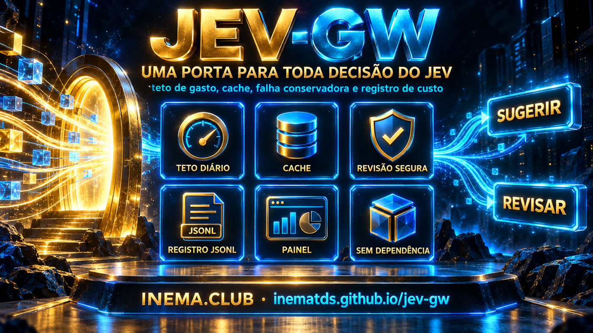

Teto de gasto, cache e registro de custo em toda consulta ao Jev. E quando o Jev cai, o seu sistema não cai junto: a resposta vira revisão humana.

Cada ponto de integração reinventa o tratamento de erro, ninguém sabe quanto se gastou no dia, e quando a API cai o sistema cai junto. O gateway é a porta única que resolve isso uma vez só.
Um valor em dólares por dia, conferido antes de cada consulta. Estourou, vira revisão humana — não adianta descobrir o prejuízo depois.
Jev fora do ar, chave errada, timeout, resposta estranha: tudo devolve review. Nenhuma falha de infraestrutura sobe como exceção para quem chamou.
Uma linha JSONL com custo, latência e decisão. O state — onde moram os dados do seu cliente — não é gravado.
Seis etapas, sempre nesta ordem — e a ordem foi escolhida, não sorteada.
Resposta já guardada não custa nada, então não faz sentido barrá-la por teto. Ao contrário, um sistema com teto estourado perderia até o que já pagou.
Verificar depois seria verificar o prejuízo, não evitá-lo.
Os limiares são do seu domínio, não do modelo. Triagem de e-mail e triagem clínica usam o mesmo Jev e limiares diferentes.
O documento ARQUITETURA.md explica cada módulo, o contrato de falha e o que o gateway não faz.
Sem framework, sem banco, sem fila, sem pip install. A chave só é exigida na primeira consulta real.
O gateway inteiro usa só a biblioteca padrão.
python3 --versionTypeSafe direto ou pelo OpenRouter. Só na hora de consultar de verdade — testes e exemplos rodam sem ela.
export TYPESAFE_API_KEY=... # ou: OPENROUTER_API_KEY + JEV_PROVIDER=openrouter
Copie a pasta jev_gw/ para dentro do seu projeto se preferir — é autocontida de propósito.
git clone https://github.com/inematds/jev-gw.git
As três chamam a mesma função. Não existe lógica que só o servidor tem.
Os 23 testes usam avaliador controlado — a suíte não gasta um centavo.
git clone https://github.com/inematds/jev-gw.git cd jev-gw && python3 -m unittest discover -s testes # Ran 23 tests ... OK
Nenhum processo extra, nenhuma porta aberta. É o jeito mais direto de embutir.
from jev_gw import decidir saida = decidir(pedido) if saida['acao'] == 'suggest': encaminhar(saida['resposta']['answers']['fila']['choice']) else: fila_de_revisao(saida['motivo']) # inclui "o Jev caiu"
Escuta só em 127.0.0.1 — o gateway guarda a sua chave.
python3 -m jev_gw servir # jev-gw ouvindo em http://127.0.0.1:8770 (painel em /painel) curl -X POST localhost:8770/decidir \ -H 'content-type: application/json' -d @pedido.json
É o formato da própria API do Jev: contexto, e uma ou mais perguntas com alternativas.
{
"model": "jev-1.13.0",
"state": "Cliente: comprei ontem e quero devolver, nem abri a caixa.",
"questions": {
"fila": {
"type": "choice",
"instructions": "Para qual fila encaminhar?",
"criteria": {
"reembolso": "Pedido de devolução ou estorno",
"suporte": "Dúvida de uso ou defeito",
"insuficiente": "Não dá para decidir com o que está escrito"
}
}
}
}
Tudo por variável de ambiente, tudo com padrão que já funciona. 0 no teto desliga o gateway.
export JEV_GW_TETO_DIARIO=1.00 # dólares por dia export JEV_GW_TTL_CACHE=900 # segundos que uma resposta vale export JEV_GW_TIMEOUT=5 # segundos por consulta
Painel no navegador, ou JSON no terminal para colocar no seu monitoramento.
python3 -m jev_gw custo # {"chamadas": 2, "consultas_reais": 1, "cache": 1, "gasto_usd": 1.6e-05, ...} http://127.0.0.1:8770/painel # gasto do dia, latência, últimas chamadas
Só um erro sobe como exceção: pedido fora do contrato do Jev, que é bug seu e precisa aparecer. Todo o resto é decisão.
# 200 decisão tomada — inclusive "review" porque o Jev caiu # 422 pedido íntegro, mas fora do contrato do Jev # 400 JSON quebrado ou opção inválida # teto estourado é 200, não 429: para quem chamou não é erro, # é uma decisão de encaminhar para revisão
Uma consulta real ao Jev pelo OpenRouter, e a mesma consulta repetida logo depois.
Decisão reembolso, confiança 1,0.
610 ms · US$ 0,0000155
Veio do cache.
0 ms · US$ 0,00
Devolveu review com o motivo, registrou, e o cliente seguiu. Nenhuma exceção.
Evidência bruta: reports/smoke-2026-09-22.jsonl. Isto é teste de integração e de contrato — não é benchmark de qualidade de decisão, e nenhuma economia é afirmada sem medição comparável.
Estado real em 22/09/2026, sem promessa do que ainda não foi escrito.